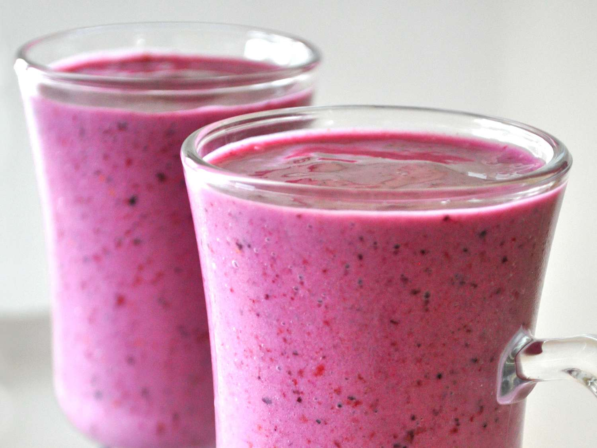

Smoothie

Um smoothie é um shake de frutas comercializado com esse nome. É uma bebida cremosa, não alcoólica,
preparada a partir de pedaços e sucos de frutas, concentrados ou congelados, tradicionalmente misturados com laticínios ou sorvete.
Ingredientes
- 1 banana
- 2 xícaras de chá de morangos
- 1/3 de xícara de chá de iogurte natural (de preferência iogurte grego)
- Gelo a gosto
Modo de preparo
- Corte a banana e os morangos em pedaços menores.
- Em um liquidificador, coloque a banana, o morango, o iogurte, o gelo e bata bem.
- Caso precise, adicione um pouco de água para ajudar a bater.
- Transfira o smoothie para uma jarra e sirva. Bom apetite.